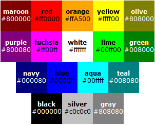

CSS 声明1可以为空，或者由 CSS 特性( property )，后加一个冒号 ":"，跟着是一个特性的值构成。中间可以有空格将它们隔开。
可用以下方式表达：
property : value;
其中 property 指代的是所有 CSS 特性，value 指的是这个特性的值。
例如：
p{
height:100px;
}
其中，height 是特性，而 "100px" 是值。CSS 声明的基础是 CSS 特性。
CSS 是用于（增强）控制网页样式并允许将样式信息与网页内容分离的一种标记性语言。 其中的样式信息，其实就是用户对于如何设置元素渲染方式的设置信息。
自提倡 Web 数据与分离理念以来，CSS 作为不可或缺的一部分参与了这项伟大运动。
以 TABLE 为例，设置它的高度，可以表示为
<table height="100">
<tr>
<td>hello</td>
</tr>
</table>
这种表示方式的坏处是不利于 TABLE 元素的统一管理，比如，页面上有 1 万个 TABLE 元素， 我已经用了 1 万次粘贴(当然，你可以借助工具)，将所有的高度置成了 100，如果要改成150，那么，又是 1 万次。 利用 CSS 完全可以摆脱这种窘境，修改 TABLE 的高度，只需这样：
<style type="text/css">
table {
height: 100px;
}
</style>
<table>
<tr>
<td>hello</td>
</tr>
</table>
其中的 height 就是 CSS 特性的一种，每个 CSS 特性都有一个名字，可以赋予它 CSS 值，以达到不同的渲染效果。你可以让所有的 TABLE 变得更高，设置它的 height 特性的值为 "150px" 就可以了。
这里有一个W3C 官方的 CSS 特性全表：W3C - Full property table， 可以查阅 CSS 特性，关于它的值的表示看不明白？不要紧，下面的内容将会就此做详细的讲解。
注：
有些值类型可能会包含整数和实数。实数和整数都只能用十进制的数来表示。
整数值表示为 <integer>，是由数字 0～9，和前面的正负号组成。例如：0，-2，-7，7。
实数值表示为 <number>，是由 0～9，小数点以及前面的正负号组成。例如：-1.5，3.1415926，实数包括整数。
注意，有时候，某些特性会给定实数和整数的确切范围，比如，经常用到的非负整数。
使用此类值的 CSS 特性有：'line-height'、'pitch-range'、'richness'、'z-index' 和 'widows' 等。
比如其中的 'z-index' 表示为：
'z-index' : auto | <integer> | inherit
长度值适用于水平或垂直方向的尺寸。
长度值表示为 <length>。长度值的格式是： <number> + 单位( e.g., px, em, etc.)，注意，一定要有单位，除非这个值是0。 如果长度值是0，单位可有可无。
可用此类值的 CSS 特性很多，例如，'margin'、'padding'、'height' 和 'width'等。
有些特性支持负的长度值，比如 ‘margin’。但是如果给一个不支持负长度值的特性设置一个负的值，那么这个声明会被忽略。
长度的单位有两种：相对长度和绝对长度。下面对这两类单位详细介绍。
相对长度会随着它参考值的变化而变化，不是固定的值。
例如：
h1 { margin: 0.5 em } /* em */
h1 { margin: 1 ex } /* ex */
p { font-size: 12 px } /* px */
例如：
h1 { margin: 0.5in } /* inches */
h2 { line-height: 3cm } /* centimeters */
h3 { word-spacing: 4mm } /* millimeters */
h4 { font-size: 12pt } /* points */
h4 { font-size: 1pc } /* picas */
百分比值表示为 <percentage>。它的格式是：<number> + %。
常见可用百分比为值的 CSS 特性如：'height'、'width' 等。
百分比值总是跟其他的值有关，比如长度值。
Web 上可用的每种资源 - HTML 文档、图像、视频片段、程序等 - 由一个通用资源标志符（Uniform Resource Identifier, 简称 "URI" ）进行定位 3。
URL 是Uniform Resource Location的缩写，译为 “统一资源定位符” 。它是 URI 命名机制的一个子集。
URI 表示为 <uri>。注意，定义 URI 使用 “url()” 。
比如，'background-image' 特性的描述：
'background-image' : <uri> | none | inherit
而在设置该特性的时候：
background-image:url(...)
计数器使用大小写敏感的标识符来表示。参考特性： 'counter-increment' 和 'counter-reset'。
计数器的标记是 'counter(<identifier>)' 或者 'counter(<identifier>, <'list-style-type'>)'，其中 'list-style-type' 默认为 “decimal”，即小数点。
注意，IE 浏览器从 IE8 才开始支持计数器。
颜色值用 <color> 来表示。可以是一个 RGB 的颜色数值，也可以是关键词。
颜色的关键词列表是：aqua、 black、 blue、 fuchsia、 gray、 green、 lime、 maroon、 navy、 olive、 orange、 purple、 red、 silver、 teal、 white 和 yellow。
来自 W3C 官方的截图：

除此之外，用户还可以使用用户环境中某些对象的颜色 4。
当然，这些关键词，浏览器可以扩展，比如：‘gold’、‘darkgray’ 等。
RGB 颜色被用于数值表示颜色。例如，用不同的表示方法表示红色：
em { color : #f00 } /* #rgb */
em { color : #ff0000 } /* #rrggbb */
em { color : rgb(255,0,0) }
em { color : rgb(100%, 0%, 0%) }
十六进制的 RGB 颜色值必须含有 “#” 前缀，后跟三个或六个十六进制字符。 其中，三位的和六位之间的转换是：'#rgb' 等于 '#rrggbb'，所以，'#FFFFFF' 可以简写成 '#FFF'。
函数记号的 RGB 颜色值，rgb(……)，括号里面是三个逗号分隔的 0～255 的值，或者是三个百分比值。百分比值 p 和整数值 v 的关系是 v=255×p。
超过有效范围的值，应该被处理为可用范围内的值，如：
em { color : rgb(255, 0, 0) } /* 范围 0 - 255 */
em { color : rgb(300, 0, 0) } /* 修剪为 rgb(255, 0, 0) */
em { color : rgb(255, -10, 0) } /* 修剪为 rgb(255, 0, 0) */
em { color : rgb(110%, 0%, 0%) } /* 修剪为 rgb(100%, 0%, 0%) */
字符串可以被写在单引号或双引号中。
字符串表示为：<string>。
一个字符串不能直接包含一个新行。想要达到此目的，可以使用转义字符 ISO-10646 (U+000A)，它表示换行符。
注：
对于不存在的特性和不合法的值，用户端都应该以忽略此声明的方式予以处理。比如：
p{
W3Help : "good";
height : "hello";
}
此样式中 W3Help 字符虽然存在，但是却不存在 W3Help 这个 CSS 特性，也不存在 "hello" 的 height 特性的值。所以，这两条样式声明都应该被忽略。
不合法的值可能引起的浏览器兼容性问题，其中有一种情况是人为的错误，被不同的浏览器以不同的方式处理，还有一种情况是，某些浏览器支持其他浏览器所不支持的值，比如：
cursor : 'hand';
恐怕，只有 IE 以及他的追随者还有使用 IE 渲染引擎的国内特色"山寨"浏览器，支持 'cursor' 特性的 "hand" 值。
注：
相关兼容性问题，可以参考：
| 操作系统版本: | Windows 7 Ultimate build 7600 |
|---|---|
| 浏览器版本: |
IE6 IE7 IE8 Firefox 3.6.8 Chrome 7.0.517.0 dev Safari 5.02 Opera 10.52 |
| 测试页面: | |
| 本文更新时间: | 2010-09-14 |
CSS 特性 值 声明